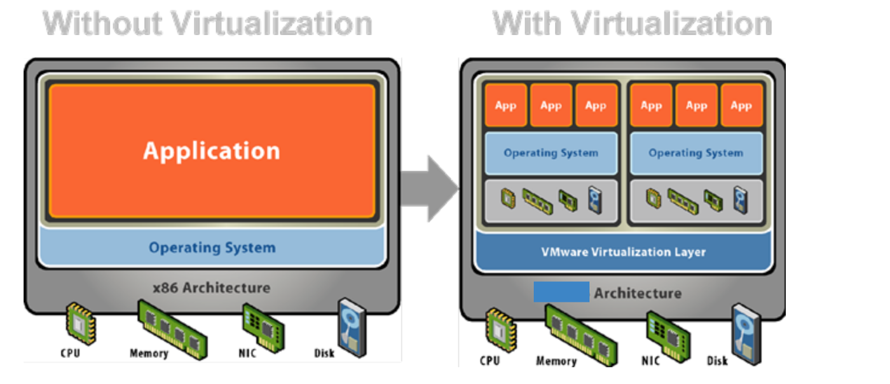
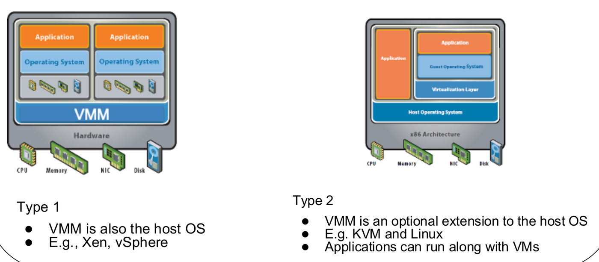

This was written entirely with AI.
1. The Basic Idea
1.1 Add a layer
David Wheeler said: “Any problem in computer science can be solved by adding a level of indirection. But this usually creates another problem.” Indirection means: do not use a thing directly; go through a layer in the middle.
Virtualization is one type of indirection. A layer gives the programs above it an interface that looks the same as the layer below it. The lecture calls this layered and compatible:
- The new layer exports a virtual X, which looks like the physical X below it.
- The layer hides the physical names. A program sees only the virtual X, so it cannot reach other programs’ resources. This gives isolation.
You already know examples. A process sees a whole CPU (Lecture 2), but the OS shares one physical CPU among many processes. A process sees its own memory addresses (Lecture 7), but they are not the real RAM addresses.
1.2 Why virtualize the CPU
- Share the physical CPU among many virtual machines. Multiprogramming already showed that sharing uses the hardware better.
- Isolate workloads, for security and for performance. A cloud server can run the jobs of tens to thousands of customers.
- Run several operating systems on the same hardware.
2. Three Ways to Virtualize
In each method below, P is the physical resource and V is the virtual resource that programs see.
2.1 Multiplexing: one looks like many
Multiplexing shares one physical resource among many virtual ones. Examples: the CPU, memory.
Virtual CPUs. Each virtual machine has one or more virtual CPU cores (vCPUs):
- The host OS schedules the vCPUs onto the physical cores, like it schedules processes. Linux, for example, treats each vCPU as a process.
- Inside each virtual machine, the guest OS schedules its own processes onto its vCPUs, like a normal OS.
Examples:
- A 4-core server can run 4 virtual machines with 1 vCPU each.
- A 4-core server can run 8 virtual machines with 2 vCPUs each, which is 16 vCPUs on 4 cores. This is CPU overcommitment. It works only because not all virtual machines run processes at the same time.
2.2 Aggregation: many look like one
Aggregation makes many physical resources look like one virtual resource. Examples:
- The memory controller joins several memory modules (DIMMs) into one memory address range.
- RAID (Redundant Array of Inexpensive Disks) makes several disks look like one disk volume.
- Link aggregation joins several network links into one virtual link with more bandwidth.
Three RAID levels. Let N be the size of one disk, n the number of disks, and M the usable size of the volume.

| Level | Method | Usable size | What it gives |
|---|---|---|---|
| RAID 0 | Striping: spread the blocks across all disks | M = N × n | Speed (disks work in parallel), but no protection: one failed disk loses data |
| RAID 1 | Mirroring: write every block to two disks | M = N, with n = 2 | Protection: one disk can fail. Half the space is used for copies |
| RAID 5 | Distributed parity: spread data and parity blocks across the disks | M = N × (n − 1), with n ≥ 3 | Protection against one failed disk, at the cost of one disk of space |
2.3 Emulation: one thing looks like another
Emulation uses software to make a resource look like a different resource. Sometimes there is no physical X at all, or the physical resource is of a different kind. Examples:
| Example | Physical (P) | Virtual (V) |
|---|---|---|
| RAM disk | Memory (DRAM) | A disk, on which you can mount a file system (for example
/tmp) |
| Java Virtual Machine | An x86-64 or ARM CPU | A processor that runs Java bytecode |
| Apple Rosetta (2006) | An x86-64 core | A PowerPC processor |
| Apple Rosetta (2020) | An ARM v8 core | An x86-64 processor |
127.0.0.1 (localhost) |
None | A network interface |
| Method | How many P | How many V | Example |
|---|---|---|---|
| Multiplexing | 1 | Many | vCPUs on one core |
| Aggregation | Many | 1 | RAID |
| Emulation | 1 of one kind | 1 of another kind | JVM, RAM disk |
3. Virtual Machines
3.1 A whole computer, virtualized
A virtual machine (VM) applies virtualization to the whole computer: P is a computer system, and V is also a computer system.

History. VMs were popular in the 1960s and 1970s, when hardware was expensive and operating systems were primitive. They came back after 2000:
- to run the OS of your choice (compatibility),
- to put many servers onto fewer machines (consolidation),
- to let different owners share one machine (multi-tenancy),
- because a VM is easier to set up than a real machine.
For these reasons, VMs are the foundation of the cloud.
3.2 The Popek and Goldberg definition (1974)
A virtual machine is an efficient, isolated duplicate of the real machine. The software that runs the VMs is the virtual machine monitor (VMM), also called the hypervisor. The VMM:
- is always in complete control of the system, and
- uses the hardware directly, so programs in a VM are at most a little slower.
3.3 Terms
Operating systems:
- Guest OS: the OS that runs inside a VM.
- Host OS: the OS that runs directly on the hardware, together with the VMM. Example: Linux with KVM.
Memory:
- Virtual memory: as in Lecture 8, the addresses that a process uses.
- Guest physical memory: what the guest OS thinks is physical memory. It belongs to the VM.
- Host physical memory: the real physical memory.
The layers, from top to bottom: applications → guest OS → VMM (hypervisor) → hardware. So the guest OS gives its applications an interface to the virtual hardware, and the VMM gives the guest OS an interface to the real hardware. Managing the interaction between a guest OS and its own applications is the job of the guest OS, not the VMM.
3.4 Type 1 and Type 2 hypervisors

| Type 1 | Type 2 | |
|---|---|---|
| Where the VMM is | The VMM is the host OS. It runs directly on the hardware | The VMM is an optional extension of a normal host OS |
| Normal applications on the host | No | Yes: they run next to the VMs |
| Examples | Xen, vSphere | KVM with Linux |
3.5 Full virtualization and para-virtualization
| Full virtualization | Para-virtualization | |
|---|---|---|
| What the VM shows | A complete copy of the real hardware | A special software interface (API) between the guest OS and the VMM |
| Guest OS | Runs unmodified. It does not know that the hypervisor exists | Must be modified to use the new API |
| Advantage | Any OS can run | More efficient: the VMM does not need to virtualize the hard parts of the instruction set |
| Examples | VMware ESXi, Microsoft Virtual Server | Xen, VMware, XtratuM |
4. How a VMM Is Built
4.1 Multiplex the CPU and memory, emulate the devices
A VMM uses all three methods from section 2:
- Multiplex the CPU, with hardware support. Each VM has its own vCPUs (P = core, V = core).
- Multiplex memory, with hardware support for virtual memory. Each VM has its own guest physical memory (P = physical memory, V = physical memory).
- Emulate I/O devices: a virtual disk, keyboard, screen, network card and network switch.
4.2 Limited direct execution on a normal computer
First, recall how a normal OS runs a program without a VMM:

- The application runs its unprivileged instructions directly on the CPU. This is fast.
- For services, the application makes system calls, which switch to kernel mode.
- Privileged instructions are reserved for the OS. If user code tries one, the CPU traps to the OS.
This is limited direct execution: the program runs directly on the hardware, but only within limits that the OS enforces.
4.3 System-level limited direct execution in a VMM
The VMM adds one more layer below the OS. Because the VMM shows the guest the same hardware/software interface (for example x86-64), the guest OS and its applications still work.

To stay efficient:
- The application and the guest OS run directly on the CPU.
- The VMM traps some privileged instructions that the guest OS issues, and handles them itself.
The VM runs in a special non-root mode, so the VMM stays in control. This is the same idea as protected mode for processes, extended from applications to whole operating systems.
4.4 The virtual CPU in one paragraph
A vCPU is multiplexed in space and in time, much like a kernel thread:
- Space: the VMM runs vCPUs of different VMs on different cores.
- Time: the VMM shares a few physical cores among many vCPUs.
Isolation comes from non-root mode for the VM, and from the assumption that the VMM (or host OS) is correct.
5. Beyond This Lecture (not examinable)
The lecture also shows containers, serverless computing, and GPU virtualization for AI services. These slides are marked not examinable.
What You Know Now (Lecture 6b)
- Virtualization adds a layer that shows the same interface as the layer below it, and hides the physical names for isolation.
- Multiplexing: one physical resource looks like many (vCPUs). Aggregation: many look like one (RAID). Emulation: one looks like another kind (JVM, RAM disk).
- RAID 0 stripes (size N × n, no protection), RAID 1 mirrors (size N with 2 disks), RAID 5 uses distributed parity (size N × (n − 1), n ≥ 3).
- A VM is an efficient, isolated duplicate of the real machine. The VMM (hypervisor) is always in control.
- Type 1: the VMM is the host OS. Type 2: the VMM extends a normal host OS.
- Full virtualization runs an unmodified guest. Para-virtualization modifies the guest to use a special API, which is more efficient.
- Limited direct execution: code runs directly on the CPU, and privileged instructions trap. A VMM extends this to the guest OS.